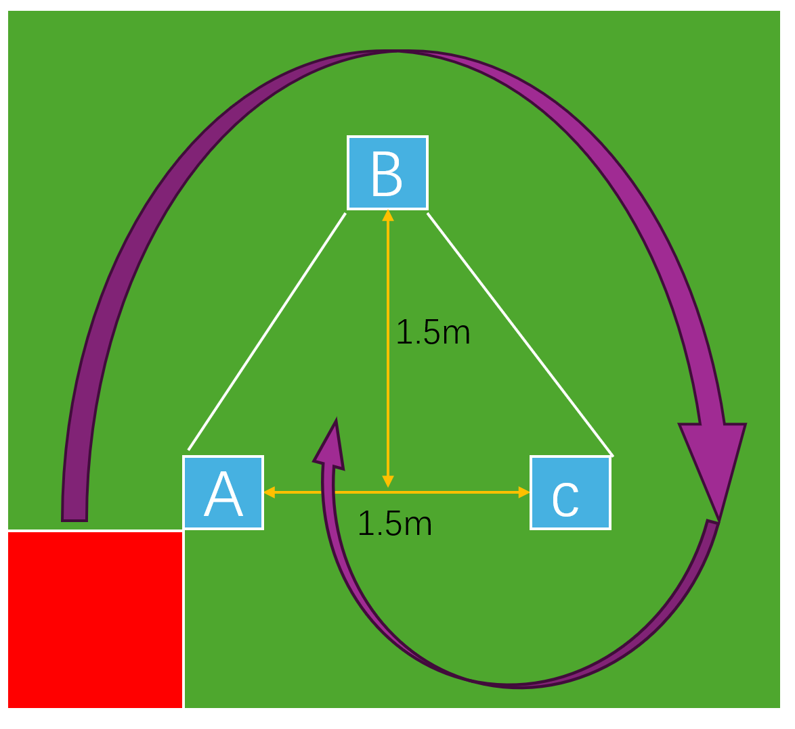

实验 11: 阶段综合实践
Integrated Practice
运行前确认小组 URI
本实验的 Python 脚本统一从环境变量 CFLIB_URI 读取实验 3 中分配的完整 radio URI，不需要把小组地址重复写入每个代码文件。打开新终端后先执行：
echo "$CFLIB_URI"输出必须与本组标签上的完整 URI 完全一致，包括接口编号、channel、速率和 address。若输出为空或不正确，请返回实验 3 的“将完整 URI 保存到虚拟机”步骤重新设置；确认无误后再运行本实验脚本。
一、阶段综合实践说明
本次阶段综合实践用于检验同学们对 Crazyflie 无人机基础操控、飞行函数调用和任务流程组织的掌握程度。只要能够通过编程让无人机完成指定飞行动作，或基本完成主要动作并能说明实现思路，即可视为完成本次实践。鼓励大家以小组形式协作调试，注意现场秩序和飞行安全。
二、实践任务
本次实践设置两个任务，完成任意一个即可视为完成阶段综合实践。
另外提前说明，目前为止教授大家使用的无人机传感器为flow deck，其主要由光流传感器实现速度定位，如若地面较为光滑会有反光，会导致其出现定位不准的情况，无人机的位置容易飘动。解决该问题的最好方法就是在无反光的地面上飞行，为此专门为大家铺设好了地毯，大家可以在地毯上进行试飞，准备好之后即可向老师展示。注意整个流程的有序，注意飞行安全。
题目一：花样飞行
首先无人机自动升空到0.3m，稍微让他飞高一些上升到0.4m的高度，稳定一下姿态，再让无人机的位置不动，先原地向右旋转360度，再原地向左旋转360度。稳定一下无人机的姿态后，再让无人机飞出一个8字形的轨迹后降落。
想想这个流程会调用到哪些控制无人机飞行的函数。为保证飞行安全，8字形飞行轨迹的半径和速度可以设置得小一些，能明显看出飞行姿态即可。飞行完毕之后，再展示飞行代码即可完成该任务。
题目二：巡航飞行
飞行地图如下图所示，摆放三个障碍物ABC，由蓝色方块所示，这三个障碍物的摆放距离已由图中标注，无人机需要从障碍物A的左下角的区域任意位置起飞，无人机起飞时的前方朝向不做限制，按照紫色箭头所示的飞行轨迹示意图，绕过障碍物B和C，最终在由ABC三个障碍物围城的三角形区域内降落，无人机降落在边界线上也算成功。
提示，紫色轨迹只是一个示意，无人机不必一定要飞出弧形轨迹，直行掉头再直行一样得能达到相同效果。

竞速测试实验记录
该视频用于记录阶段综合实践中的竞速路线测试，重点核对通道通过、转向稳定性、速度控制和安全边界。